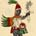
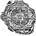
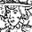

Lecturas
Colón, carta a Luis de Santángel (1493; versión modernizada)
Irving Leonard, "Amazonas, libros y conquistadores: México"
Texto del Requerimiento
La conquista de México
Cortés, Segunda carta de relación
Bernal Díaz, Historia verdadera de la conquista de la Nueva España
Bernardino de Sahagún, Historia general de las cosas de Nueva España
Informantes de Sahagún, presagios (Historia general de Sahagún)
Tzvetan Todorov, "Cortés y Moctezuma: de la comunicación"
Imágenes
|  | Imágenes del Códice florentino de Sahagún |
|  | Ediciones de la segunda carta de Cortés (mapa de Tenochtitlán) |
Debates sobre la colonización de América
Pablo III, Encíclica Sublimus Dei (1537)
Juan Ginés de Sepúlveda, Democrates alter (1550)
Bartolomé de Las Casas, Brevísima relación (c. 1542; 1552)
La cultura letrada y las Américas (los Andes)
Garcilaso de la Vega, el Inca, Comentarios reales
Felipe Guaman Poma de Ayala, Nueva corónica y buen gobierno
Imágenes
|  | Imágenes del manuscrito de Guaman Poma |
Los márgenes del Imperio
Alvar Núñez Cabeza de Vaca, Naufragios (1542; 1555)
{kind=link}
{kind=link}
{kind=link}
{kind=link}
{kind=link}
{kind=link}
{kind=link}
{kind=link}
{kind=link}
{kind=link}
{kind=link}